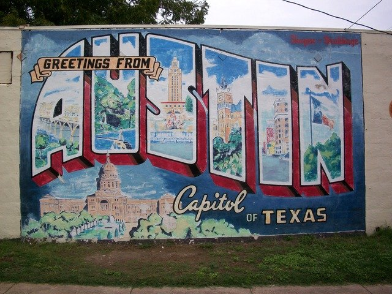

Years ago when people talked about Austin they would quickly mention the music. But that's just the beginning of what they're saying these days. Austin is also home to a wonderful ballet, world-class museums, one-of-a-kind shopping and beautiful outdoor spaces. You can just as easily spend your morning paddling the lake as you can strolling through a celebrated history museum. And it's okay if you don't have time to fit it all in, you can just come back and visit again.
Austin is known as the Live Music Capital of the World® but that's just the beginning. Home to unique attractions and world-class museums, Texas' capital city has a soundtrack all its own. Spend a day exploring sculpture gardens and historic homes, zipline through the Hill Country or give the kids a hands-on experience at a number of STEM museums.
Much like the live music scene, Austin takes eating and drinking very seriously. While visiting, you should too. Austin’s culinary and cocktail scene has exploded over the past couple of years, allowing visitors to delight in a diversity of cuisines and experiences.
